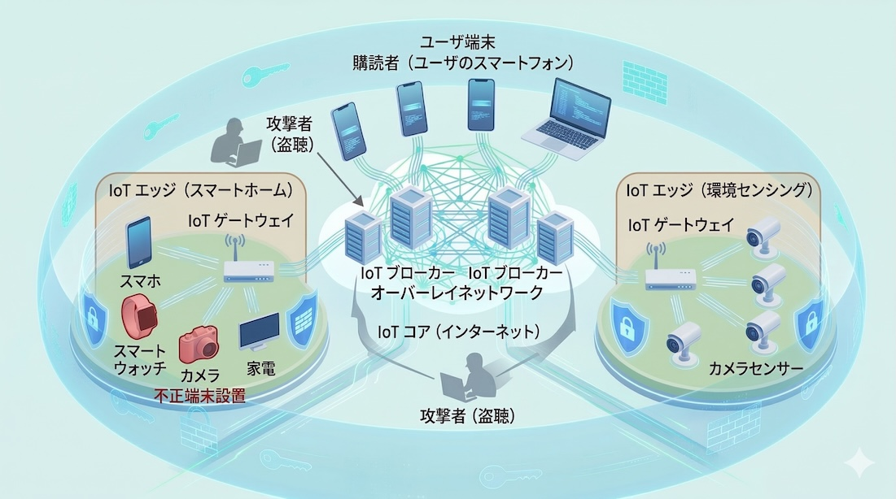

Network Security
誰にも邪魔されない、二人の密会（プロトコル）のために。
かつて、愛の言葉は一通の手紙に託され、届くまでの時間を慈しむものでした。
しかし現代（いま）、街中のセンサーが私たちの吐息を拾い上げ、
手元のデバイスは休むことなく世界と密会を繰り返しています。
この「つながりすぎた世界」では、純粋な想い（データ）ほど、無粋な視線（サイバー攻撃）に晒されます。
誰にも知られず、誰にも汚されず、ただ愛する目的地（ホスト）へと辿り着く——。
私たちは、迷路のようなIoTの闇を駆け抜ける「一途なプロトコル」を設計し、
二人の密会を永遠の秘密にする「数式の仮面（匿名化）」を編み上げています。
1. IoTシステムにおけるセキュリティの全体像
現代の社会基盤を支えるIoTシステム。その安全性は、単一のデバイスではなく「システム全体の循環」の中にあります。これを理解するのは、悪名高い「梅田の地下迷宮」で遭難せずに地上へ脱出するよりはずっと簡単です。

[IoTネットワークの全体像]
-
1. IoT端末（センサー端末や情報機器）
IoT端末とは、物理世界の情報（温度、湿度、加速度、映像など）をデジタルデータとして取得（センシング）し、ネットワークを介して送信（Publish）する機能を備えた末端のデバイス群を指します。計算リソースや電力に制約があるものが多く、高度なセキュリティ機能を単体で実装することが困難なケースが一般的です。
彼らは24時間文句も言わずに働き続ける極めて模範的な従業員ですが、そのガードの固さは、「見知らぬハッカーにナンパされて3秒でついていく彼女」並みに絶望的です。誘惑（不正なアクセス）に負けて大切な情報を安売りさせないよう、数学的な口封じ（軽量暗号）によって「貞操観念」を徹底的に叩き込むのが、私たちの設計するプロトコルです。
-
2. IoTブローカー（サーバ）
IoTブローカーは、出版購読モデルにおける中継役を担うサーバです。多数の端末から送信（Publish）されるデータを集約し、特定のトピックを購読（Subscribe）している購読者（ユーザ）へと適切にルーティングする、システムの「心臓部」として機能します。
まさに情報のコンシェルジュですが、同時に攻撃者にとっては情報の「宝の山」でもあります。ここを守り抜くことは、「ベッドの下に隠したアイドル雑誌を、母親の抜き打ち掃除攻撃から死守する」のと同じくらい重要です。万が一突破されれば、私たちの社会的尊厳と研究予算が音を立てて崩れ去る……そんな緊張感の中で鉄壁の要塞を設計しています。
-
3. 購読者（スマートフォンやPCを使用するユーザ）
購読者は、ブローカーから配信されるデータを最終的に消費するエンドユーザやアプリケーションを指します。必要な情報のみをフィルタリングして受け取ることで、通信帯域を節約しながらリアルタイムな情報更新を実現します。
ここでは、「夜の街で複数のテーブルを同時に沸かせる伝説のキャスト」のように、華麗で無駄のない接客（データ配信）が行われます。どの「客（デバイス）」に対しても、「自分だけが特別に扱われている」と感じさせる完璧なレスポンスを返しつつ、裏側では一糸乱れぬ効率で大量のデータを捌き切る。そんな究極の「おもてなし（通信制御）」を追求しています。
このシステムに侵入しようとする不届き者には、梅田の地下で永遠に出口を探し続けるような、終わりのない絶望（計算コスト）をプレゼントしています。
2. 具体的な研究テーマ
安全性の担保
ネットワークの設計段階からセキュリティ要件を組み込む、高信頼な次世代プロトコルの研究開発に取り組んでいます。 従来のIoT通信プロトコルは効率性を優先するあまり、暗号化や認証が後付けになることが多く、それが実装上の脆弱性や設計ミスによる重大な情報漏洩を招く原因となっていました。 私たちは、厳密な形式手法を用いてプロトコルの安全性を数学的に証明し、サービス妨害攻撃（DoS）や中間者攻撃に対しても揺らぐことのない、強固な通信基盤の確立を目指します。
甘酸っぱくも切実な中高生の記憶。お互いの気持ちを確かめ合う前に教室の黒板に相合傘を書いてしまうような、無防備で危うい放課後の恋。 そんな切実な想いを狙う無粋な邪魔者（攻撃者）から、二人を数学という名の絶対的な防衛線で守り抜き、DoSを仕掛けることさえ許さない絆を構築します。
プライバシー保護
通信データの内容だけでなく、トラフィック解析によって漏洩する「誰が・いつ・どこで」通信したかというメタデータの秘匿技術を研究しています。 たとえ強力な暗号で中身を隠しても、通信の頻度やタイミングからユーザーの行動パターンや物理的な位置情報が推定されてしまうリスクは残ります。 本研究では、パケットの経路を複雑化する匿名ルーティングやダミートラフィックの注入技術を駆使し、ネットワーク上の足跡を完全に消し去ることで、究極のプライバシー保護を実現します。
放課後の街に沈む教師と生徒の禁断の恋。現場を目撃された時点で、その清らかな夢は終わりを迎えます。 無粋な邪魔者の視線から二人の足跡を新宿の巨大迷宮の中に消し去るために、データだけでなく「つながり」そのものを秘密のベールで包み込みます。
デバイス真正性
IoT環境において、悪意ある第三者が物理的に設置した「不正な端末」を排除するための、軽量かつ高信頼なデバイス認証プロトコルを開発しています。 スマートホームやインフラ拠点では、ネットワークの内部に直接攻撃端末を紛れ込ませる攻撃が顕在化しており、従来の中央集権的な管理だけでは限界があります。 私たちは、端末が持つ計算力に合わせた最適な認証スキームを設計し、リソースの制約が厳しいデバイス同士であっても、互いの正当性を一瞬で検証できる仕組みを構築します。
不正端末という名の間男は、家庭内の平穏を壊す不貞の証拠（ジャンクデータ）を撒き散らします。 百戦錬磨のナンパ師も一瞬のハンドシェイクで見破り、その不貞な通信を即座に遮断することで、あなたのプライバシーと家庭内の平穏を蹂躙させません。
データ完全性
絶え間なく流れるストリームデータに対し、その情報の「出処」と「一貫性」を数学的に保証する検証技術の研究に取り組んでいます。 通信の途中でデータの一部が書き換えられたり、古いデータが再利用（リプレイ攻撃）されたりすることを防ぐために、軽量なデジタル署名やメッセージ認証コード（MAC）を導入します。 デバイスの計算リソースや電力消費を最小限に抑えつつ、受信したデータが送信者の意図した通りの純粋な状態であることを、リアルタイムで証明する技術を追求します。
必死に書いたラブレターの「好き」という一文字が、配送の途中で「嫌い」に改ざんされていないか。 限られた予算（リソース）の中で、いかにして愛の真実を証明するか。相手に届いた言葉が、あなたの想った通りの温度であることを、裏切りのない数式によって保証します。
3. 過去の研究テーマ
放課後の誰もいない教室で交わされる、誰にも知られてはいけない内緒話。そんな「秘め事」を、無粋な盗聴者から守り抜いた研究実績です。
| 匿名MQTT通信プロトコルの解析 | 誰が何を囁いたかを完全に隠蔽する、現代の「覆面での文通」を守る研究です。 |
|---|---|
| オニオンルーティングによる匿名経路制御 | パケットの足跡を複雑な迷路の中に消し去る、まさに「放課後の逃避行」を支える技術です。 |
| マルチパス回避ルーティング | 悪意あるスパイセンサーが待ち構える道を数学的に予見し、大切な想いを守り届ける護衛戦略です。 |
| 大規模RFIDシステムの高速民間認証 | 数千枚のタグの中から、本物の「特別な一人」を見つけ出し、第三者にその正体を悟らせない高度な照合技術です。 |